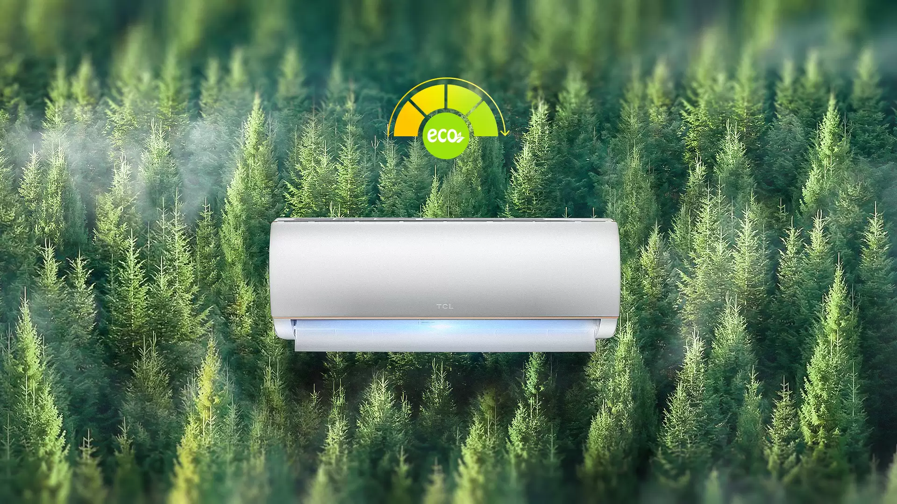
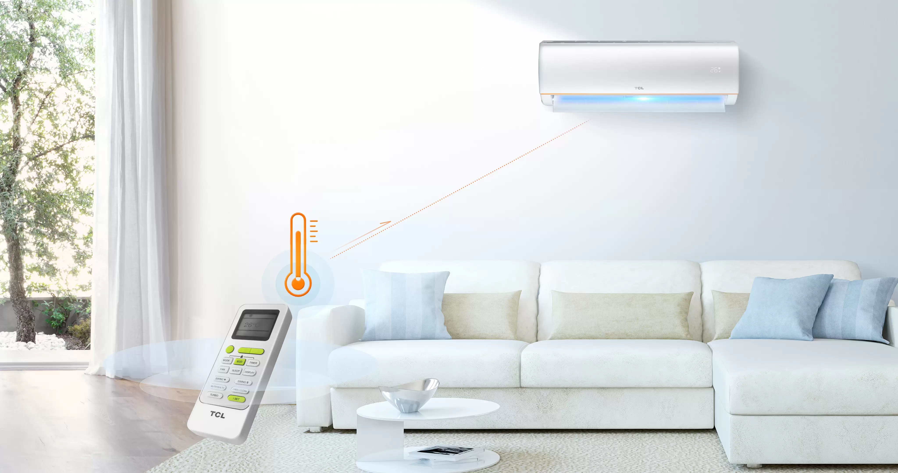
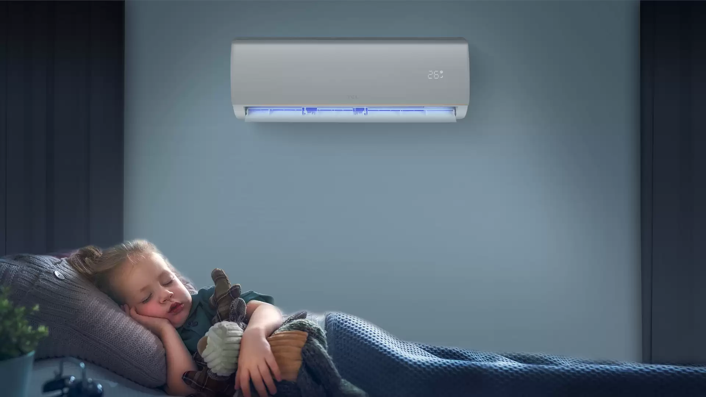
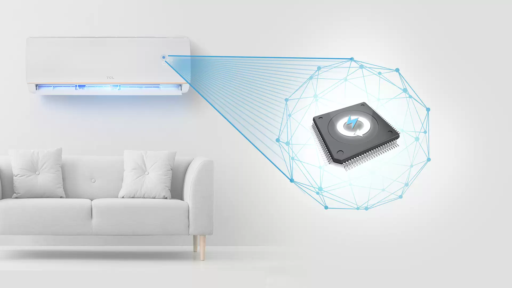
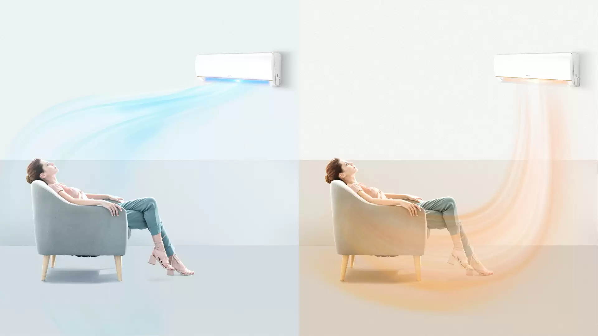
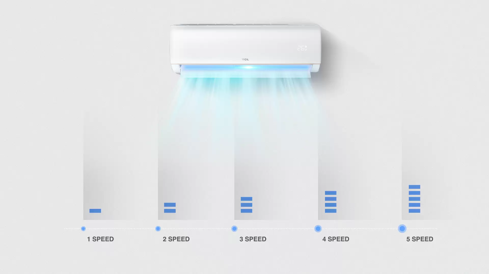
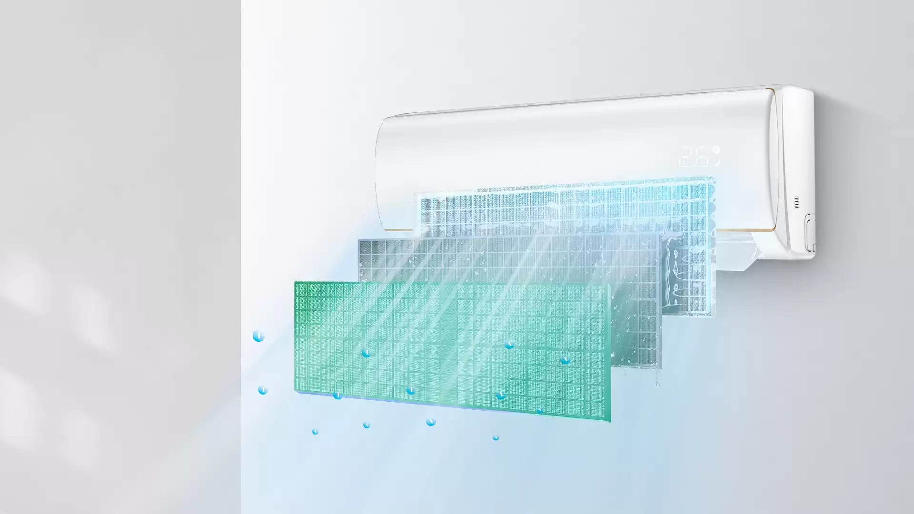
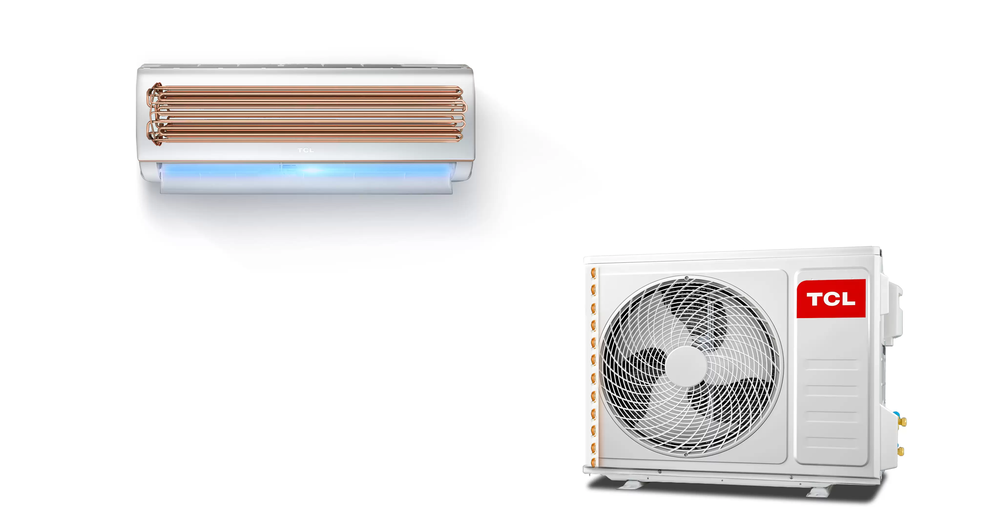
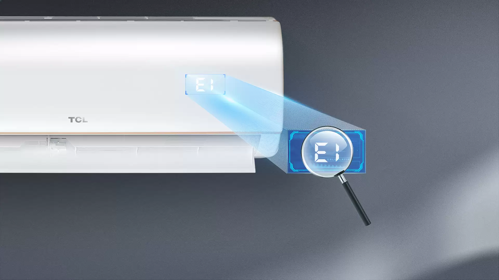

ЭКО-режим
Нажмите Eco Mode для фиксированной, оптимизированной программы для 26 ℃. Создан для бережного отношения к окружающей среде, экономии на счетах за электроэнергию и поддержания жесткого диапазона температур. Идеально подходит для ответственной работы без суеты в фоновом режиме.

Я чувствую
Режим iFeel позволяет измерять температуру окружающей среды напрямую с помощью датчика, встроенного в пульт дистанционного управления. Расслабьтесь с большим комфортом, благодаря высокоточным показаниям в номере и подаче воздуха.

Режим сна
После активации спящий режим будет работать с меньшей мощностью; поддержание узкого температурного буфера. Температура колеблется при длительной работе, для поддержания более комфортного сна и свежести в комнате.

Беззвучный режим
Нажмите Mute для приглушенной работы на уровне XX дБ. Тишина, ниже, чем у обычного ноутбука, гарантирует, что вы можете сосредоточиться на важных вещах.

Умный воздушный поток
Инновационная система кондиционирования воздуха направляет прохладный воздух вверх, обеспечивая широкое освежение, как в душе. Теплый воздух направляется вниз, чтобы создать более захватывающий воздушный поток, похожий на одеяло. Воздух распределяется более равномерно, избегая горячего и душного или очень холодного распределения.

5-скоростной режим
Выберите уровень интенсивности воздушного потока от 1 до 5. Более широкие настройки, чем у стандартных решений, позволяют вам установить идеальную, точно подобранную скорость воздуха.

Подсказка об очистке фильтра
По прошествии определенного периода времени кондиционер автоматически напомнит пользователям о необходимости чистки. Соблюдайте несложное обслуживание, чтобы обеспечить высочайшую гигиену и чистоту воздуха.

Безопасность прежде всего
Конструкция, ориентированная на безопасность, в комплекте с противопожарным блоком управления обеспечивает долгосрочную и надежную работу.
Медная труба
Кондиционер с медной трубкой отличается большей прочностью и большей эффективностью охлаждения.

Самодиагностика
При обнаружении каких-либо неисправностей кондиционер отобразит информацию на дисплее - для немедленной диагностики и простого обслуживания.
